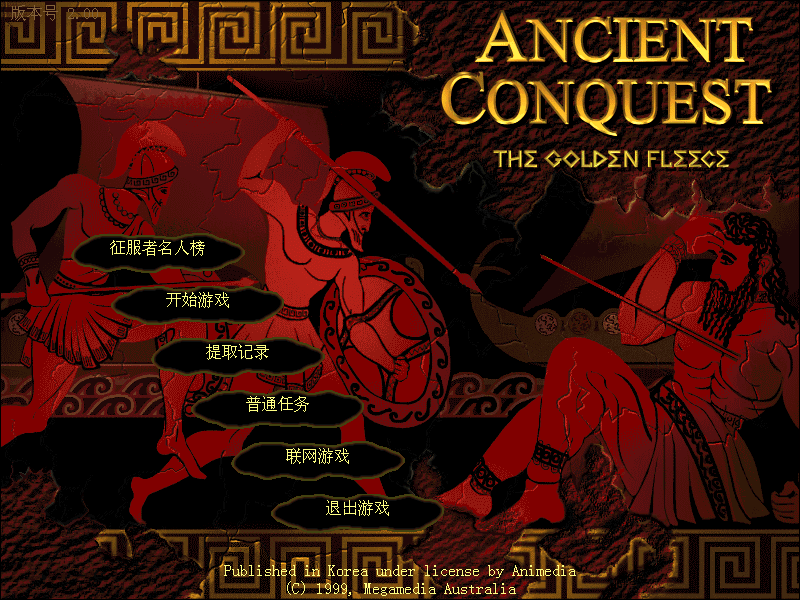
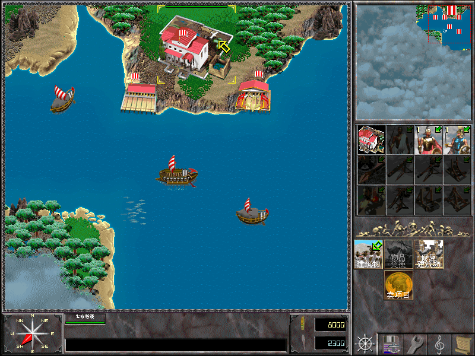

名稱：古代爭霸戰／遠古爭霸戰：金羊毛戰役 (Ancient Conquest: Quest for the Golden Fleece，簡中／英文版) 簡介：Megamedia 1999年出品的即時戰略遊戲，2001由晶合簡中化並代理發行 [待補]。   保護：光碟 備註：簡中版VirtualBox無法執行（英文版可以），虛擬機請使用VMware。 備註：簡中版必須在簡中系統上執行，否則會亂碼。

